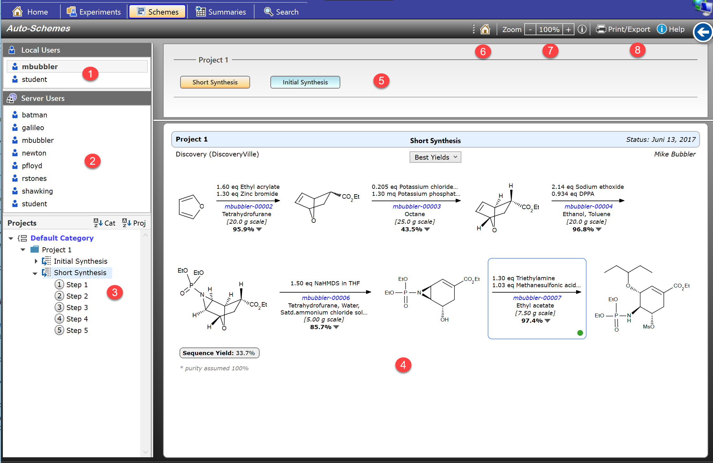
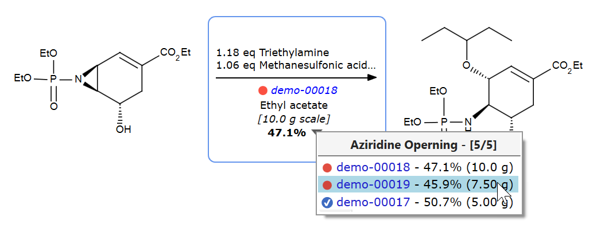
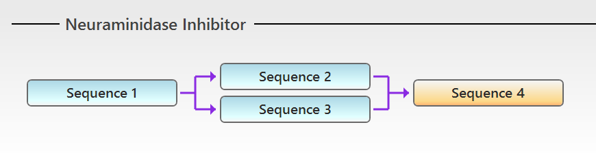
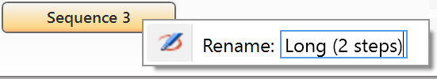
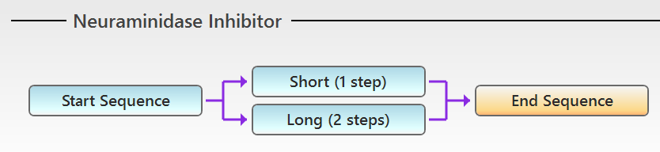
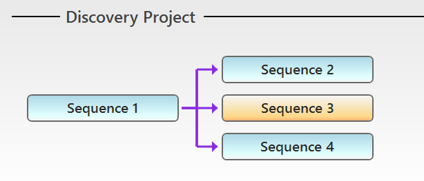
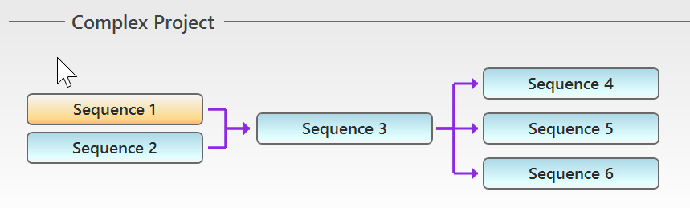
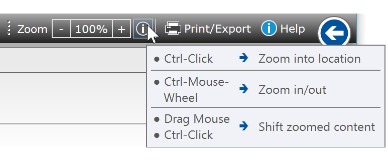
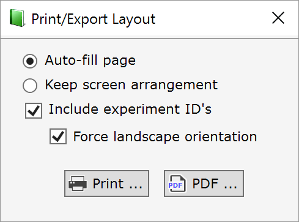

Schemes Section
Espresso ELN automatically analyzes all experiments within a project for the presence of synthetic step sequences and presents the result as graphical reaction schemes (4). Each step of the scheme displays the reaction conditions of the experiment featuring the highest yield or scale (user-selectable) and provides direct access to all of its underlying steps. Multiple sequences per project are are possible, either isolated or interconnected ones (5). The ability to drill down from high-level synthesis sequence schemes to single experiments is well suited for live presentations.
If connected to an Espresso ELN server database, also the reaction schemes of other users within your organization are available; however, only the experiment data of their finalized experiments are accessible.

1 & 2 - Select a User:
The auto-schemes of all users of the local machine (1), as well as the ones of all users present on the Espresso ELN server database (2) can be retrieved. The server users list only appears if a connection to the server database is present. Please note that unfinalized experiment data of server users (2) are not accessible.
3 - Select a Sequence:
The sequences tree allows the selection of a desired sequence. Sequences and steps are assigned generic names (Sequence 1, Step 1, ...) when auto-generated, but can be renamed at any time by clicking an already selected project or step entry in the tree.
4 - Summary Sequences:
This area contains the auto-generated multi-step sequences. Clicking the dropdown triangle to the right of the yield, or right-clicking anywhere inside a reaction arrow area opens the step experiments dropdown menu. Its experiment items either are sorted by yield or by experiment scale, according to the current selection (sort selector on top of the scheme). Clicking an experiment menu item opens the experiment in the Experiments section. All finalized experiments are accessible this way, while unfinalized experiments are only accessible by the current local user.

Click the blue reaction-ID link just below the reaction arrow to open the displayed reference experiment.
5 - Sequence Flow Scheme:
Above reaction scheme is an example of a simple linear sequence. However, often the situation is more complex than this. Consider following scenario: During optimization you are able to shorten above synthesis by merging one or several steps into one step ("telescoping"). Espresso ELN reflects this situation as follows:

A flow scheme now appears on top of the reaction scheme area, containing unique step sequence elements. In our case this indicates that the formerly linear sequence now is split into four sequences: Sequence 1 contains the unchanged steps up to the point the telescoping started, Sequence 2 contains the shortened sub-sequence (1 step), Sequence 3 contains the original, longer sequence (2 steps), and Sequence 4 contains the unchanged common final steps.
Clicking a flow scheme element displays the contained step(s) in the summary scheme area below.
Above flow scheme elements can be renamed to assign them more meaningful names by right-clicking them and editing the title:

This may results in the following scheme after editing all elements:

Espresso ELN's auto-scheme engine isn't limited to handling telescoping situations. Let's e.g. consider a typical discovery chemistry scenario, where a common building block first is synthesized (sequence 1), from which several drug candidates are created (sequences 2-4). The flow scheme below will be rendered to map this situation:

And here's the view of a more complex situation:

Almost any other scenario can be mapped in a similar fashion. Also isolated sequences are supported, i.e. linear sequences which exist inside the project, but without any connection to other project sequences.
6 - Go To Current Experiment:
Displays the reaction scheme which contains your currently active experiment.
7 - Zoom:
Sequence schemes can be magnified for better detail visibility, which also is useful for presentations. While you can always utilize +/- toolbar zoom buttons, working with the mouse in combination with the CTRL-key is far more effective; to see the available options, just move the mouse over the zoom help button. This will bring up a help tool tip (see screen shot below). Clicking the button opens this help page.

The most straightforward option for zooming in is to CTRL-click into a location of the scheme, which smoothly zooms into this part of the it, stopping at 150% magnification. - Once there, you can do one the following:
- CTRL-Click into another location of the zoomed scheme: This shifts the view to the clicked center.
- Drag the zoomed scheme manually to the desired position.
- CTRL - Scroll MouseWheel Up: This further zooms into the location.
- CTRL - Scroll MouseWheel Down: This zooms out by one level.
You can also always utilize +/- zoom buttons of the zoom toolbar to zoom in and out. Or click the the zoom percent indicator to immediately reset the zoom to 100%. The available zoom levels are: 100%, 150%, 200% and 300%.
8 - Print/Export:
The displayed synthesis sequence can be printed or exported to PDF in any desired layout, since its step elements are free-flowing. A suitable arrangement can either be achieved by modifying the window size and printing the resulting arrangement ("Keep screen arrangement"), or by other predefined settings:
